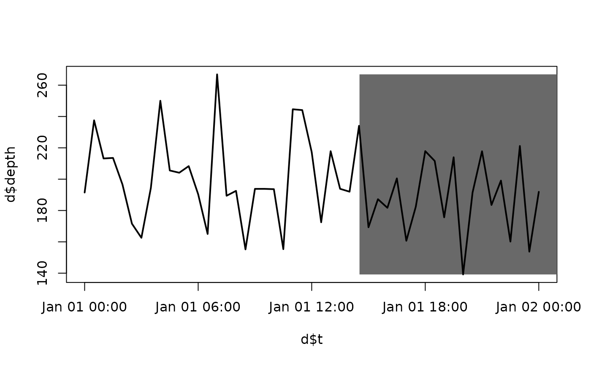

This function is used to add blocks of shading to a plot. Blocks can be added vertically or horizontally. This can help elucidate associations between a continuous variable and a factor. For example, in plots of depth ~ time, it can be helpful to delineate diel periods (i.e., day or night) with shading.
add_shading_bar(x1, x2, horiz = FALSE, lim, col, border = FALSE, ...)
| x1 | A sequence of starting values (x or y coordinates) for each block. |
|---|---|
| x2 | A sequence of ending values (x or y coordinates) for each block. |
| horiz | A numeric input that defines whether or not shading blocks are horizontal (i.e. |
| lim | A numeric input that defines the horizontal or vertical limits of each block. |
| col, border | The colour of each block and its border. |
| ... | Other graphical parameters passed to |
The function adds blocks of shading to a plot.
The function is vectorised over x1, x2, col and border.
Edward Lavender
#### Define some data; we'll define a time series example # Define times t <- seq.POSIXt(as.POSIXct("2016-01-01", tz = "UTC"), as.POSIXct("2016-01-02", tz = "UTC"), by = "30 mins") d <- data.frame(t = t) # Imagine our response is animal depth through time d$depth <- rnorm(nrow(d), 200, 25) # Define limits and visualise ylim <- range(d$depth) plot(d$t, d$depth, type = "n", ylim = ylim) #### Define arguments for add_shading_bar() # In this example, we'll add blocks of shading distinguishing 'day' versus 'night' to aid # ... interpretation of the animal depth time series we've simulated above. To do this, # ... we could use the define_time_blocks() function but, for transparency, # ... we'll use the following approach to define the times of day/night and associated colours # ... in a dataframe that we can then pass to add_shading_bar(): # Define the times of day/night across the time series: dates_block <- seq.POSIXt(min(t), max(t), by = "days") dat_block <- data.frame(date = sort(rep(dates_block, 2)), level = c(rep(1:2, length(dates_block)))) dat_block$level <- factor(dat_block$level) coords <- matrix(c(56, -5), nrow = 1) pos_sunrise <- which(dat_block$level == 1) pos_sunset <- which(dat_block$level == 2) dat_block$time <- rep(min(t), nrow(dat_block)) dat_block$time[pos_sunrise] <- maptools::sunriset(coords, dateTime = dat_block$date[pos_sunrise], direction = "sunrise", POSIXct.out = TRUE)[,2] dat_block$time[pos_sunset] <- maptools::sunriset(coords, dateTime = dat_block$date[pos_sunset], direction = "sunset", POSIXct.out = TRUE)[,2] dat_block$col <- c("white", "dimgrey")[dat_block$level] # Rearrange dataframe: x1 <- dat_block$time[1:(nrow(dat_block)-1)] x2 <- dat_block$time[2:nrow(dat_block)] col <- dat_block$col[1:(nrow(dat_block)-1)] dat_block <- data.frame(x1 = x1, x2 = x2, col = col) dat_block$col <- as.character(dat_block$col) #### Add shading add_shading_bar(dat_block$x1, dat_block$x2, horiz = FALSE, lim = ylim, col = dat_block$col) #> [[1]] #> NULL #> #> [[2]] #> NULL #> #> [[3]] #> NULL #> #### Add back depth time series using add_lines() add_lines(d$t, d$depth, lwd = 2) 